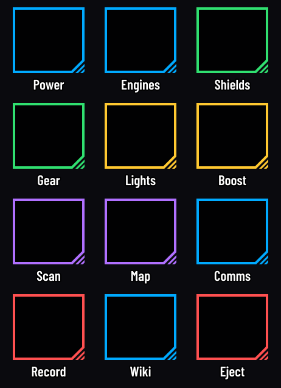
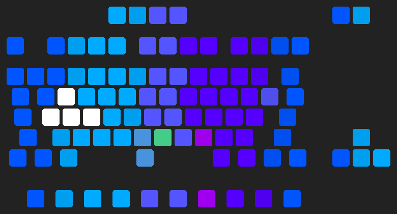

Your keyboard, your way.
Commander is an open-source tool for using a keyboard without its maker's software. It starts with one keyboard, the Turtle Beach Command Series KB7: your own buttons on its touchscreen, layered RGB lighting and a profile per game, set up in one window, without Swarm II running.
Get the beta on GitHub See where it is going
Beta, for Windows. A Linux build of the command line exists and passes its tests, but has not been run on a keyboard yet. The executables are not code-signed, so Windows SmartScreen may warn before the first start. Each release lists the SHA-256 of every file and links to its VirusTotal scan.

The hardware is yours. The software should be too.
Plenty of good keyboards come with software you would rather not run. Commander aims to be the one tool you set up your own way and keep, whichever supported keyboard is on your desk. Today that is one keyboard. This is how more are meant to follow.
-
KB7
Works today
Touchscreen buttons, actions on the PC and layered lighting, on Windows. In beta.
-
Open test suite
Planned
So that support for another device can be added, and checked, in the open by someone who owns it.
-
More devices
Not supported yet
Other keyboards and button panels whose own software gets in the way. None works with Commander today.
How a device gets added
- The protocol is worked out only by observing the USB traffic of hardware we own. The maker's programs and firmware are not decompiled or included.
- Only commands that were seen in captures are ever sent to a device. No guessing and no fuzzing.
- Firmware update, bootloader and factory-reset commands are never implemented.
The capture toolkit and the protocol notes for the KB7 are in the repository. Want to help? Start with the contributing guide.
What works today, on the KB7
- A window for everything
- Open Commander from the tray icon and set up buttons, lighting, game profiles and the keyboard's own profiles. Changes stay a draft until you press Save; Commander checks them first and then puts them on the keyboard. The window needs the WebView2 runtime, which Windows 11 has.
- Touchscreen buttons
- Buttons on the pages of the keyboard's touchscreen, up to twelve to a page, per keyboard profile. Use your own PNG pictures or the built-in style: a coloured frame, an optional symbol and a title.
- Actions on your PC
- A button presses a key or a combination, plays a sequence with pauses, starts a program, or opens a website, file or folder. Record the keys instead of typing them. Buttons can tap, hold, or act only after a long press.
- A profile per game
- Make a game profile, pick its program and choose which of the keyboard's five profiles it gets. The keyboard switches when the game starts and goes back to Desktop when it closes.
- Layered lighting
- Pick one colour, a wave or breathing, add a ripple from each key press and highlight keys, with a live preview. An advanced view gives the whole stack of layers on the 112 LEDs.
- Plain files underneath
- Everything the window saves is a readable text file in a folder you choose. Edit it by hand if you like. Commander saves files in its own form, without comments, so it first puts a copy of a file you wrote yourself in a backup folder.
One text file per profile
Layouts are plain TOML files in a folder. The lighting below, and the buttons at the top of this page, come from this one file.

kb7screen light-preview: a simulation with made-up key presses. Not a recording of the keyboard.# game.toml
profile = 1
switch_when_running = "game.exe"
[[button]]
page = 1
position = 0
title = "Power"
color = "#00AAFF"
action = ["P", "wait 600ms", "I"]
[[button]]
page = 1
position = 5
title = "Boost"
color = "#FFC830"
action = ["LShift"]
mode = "hold"
[[button]]
page = 1
position = 11
title = "Eject"
color = "#FF5050"
action = ["RAlt+Y"]
confirm = "hold 1s"[light]
[[light.layer]] # bottom first
effect = "wave"
colors = ["#0040FF", "#00C0FF", "#8000FF"]
speed = 0.5
direction = "right"
[[light.layer]]
effect = "ripple"
color = "#FFFFFF"
[[light.layer]]
effect = "state"
name = "gear"
toggle = "N"
start = "on"
keys = ["N"]
color = "#30E070"
[[light.layer]]
effect = "fixed"
keys = ["W", "A", "S", "D"]
color = "#FFFFFF"Every setting, key name and effect is described in the manual.
Try the beta
Downloads are on GitHub, not on this site. The executables are built from the source by GitHub Actions; check a file against its SHA-256 before you run it. Close Swarm II while you use Commander. Swarm II is still needed for firmware updates.
Open the releases page Source code
Using this software is at your own risk. It may void your warranty.